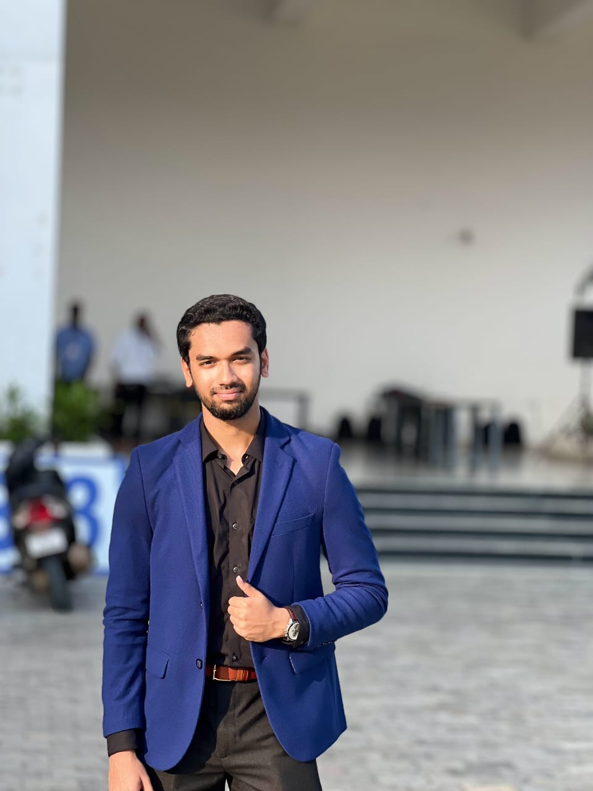
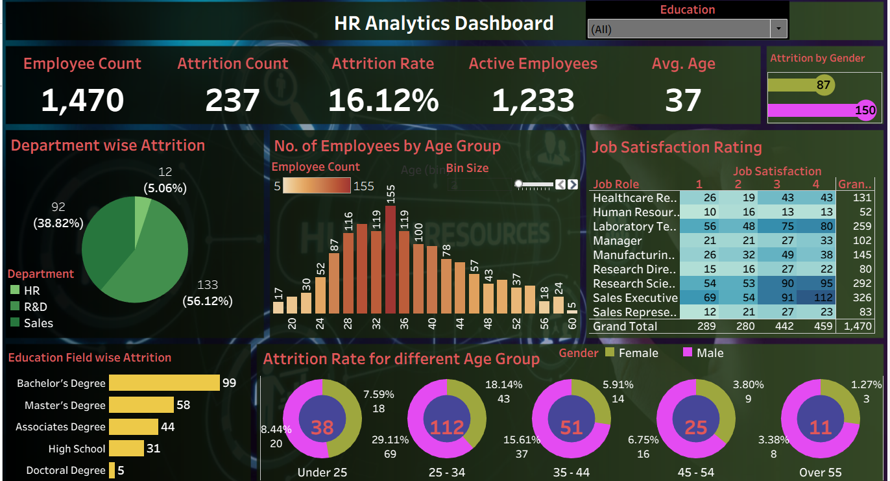
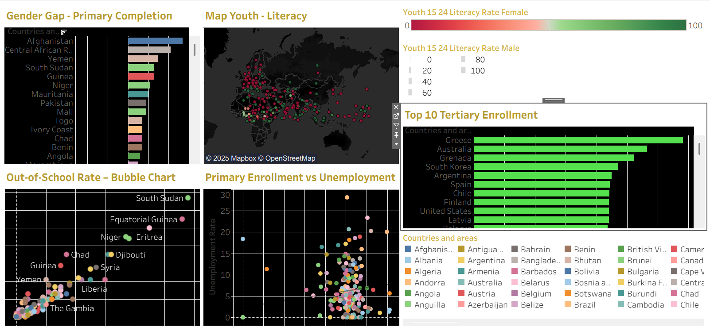

Hello, I'm K Mohammed Izhan
About Me

👋 Hi, I’m Mohammed Izhan — an aspiring Business Analyst passionate about transforming complex business challenges into clear, actionable solutions. I thrive on analyzing data, optimizing processes, and collaborating with cross-functional teams to uncover what truly drives business value. I work with tools like SQL, Excel, Tableau, and Python to extract insights from data and turn them into meaningful outcomes. With a strong understanding of Agile methodologies, SDLC, and effective documentation, I aim to bridge the gap between business needs and technical execution. Curious by nature and driven by impact, I’m eager to contribute to projects where business strategy meets technology, helping organizations make data-driven decisions and improve performance while continuously learning and growing in the process.
My Academics
TAW School
2007 - 2021
Completed primary, secondary and high school education focusing on the domain of Science which included Physics, Chemistry, Mathematics and Computer Science.
Bachelor of Technology in Computer Science and Engineering
VIT University, 2021 - 2025
Focused Object-Oriented Programming(Java), Database Management Systems(DBMS), Operating Systems, Computer Networks, Software Engineering and SDLC, Cloud Computing (Google Cloud)
My Experience

Software Engineer Intern (Sept 2025 - Oct 2025)
6Origin
- Enhanced and optimized a React.js + Vite-based e-commerce platform enabling over 1,000+ handmade product listings and seamless vendor–buyer interactions.
- Engineered dynamic authentication modules (Login/Register) using React Hook Form, React Router, and Toastify for enhanced user experience.
- Collaborated on integrating RESTful APIs and state management to ensure smooth data flow across product, dashboard, and user modules.
- Improved frontend performance and build speed by 30% through optimized routing, component reusability, and Vite bundling.
Projects
Hybrid CNN-Attention Model for Predicting Jet Engine Failures
Built a CNN-based RUL prediction system for aircraft engines using NASA’s CMAPSS dataset. Developed a hybrid 1D CNN with temporal attention and asymmetric loss, improving accuracy by 18% RMSE and reducing late predictions by 35% through EDA-based feature selection and adaptive normalization.
View ProjectRetail-Insights-Pipeline
Developed a Retail Revenue Analysis system processing 100K+ transaction records to analyze product performance and sales trends. Built an end-to-end data pipeline using Python, MySQL, and Tableau, converting raw retail data into actionable business insights. Engineered 2 SQL views and 5 analytical queries to calculate gross sales, net revenue, and product rankings, improving query performance by 30%.
View Project
Employee Attrition Analysis
Built an interactive HR Analytics Dashboard in Tableau to track attrition across departments, highlighting high-turnover areas. Identified top 3 drivers of churn (tenure, department, age), with insights supporting potential 20–25% attrition reduction. Found employees with < 2 years tenure had 2× higher attrition, guiding HR to focus on early-stage retention. Analyzed seasonal attrition trends, helping predict and prepare for 10–15% shifts in retention.
View Project
Global Education Trends
Visualized global education indicators (literacy rates, enrollment, gender parity) across 50+ countries, highlighting regions where female literacy remains 20–25% lower than male rates. Mapped trends over 10 years to show average global primary school enrollment increased by ~15%, while secondary school enrollment lagged by 10%. Built using Tableau & Excel, enabling interactive, data-driven insights for global education trends.
View ProjectGet in Touch
Let’s connect to collaborate on innovative projects, share ideas, or explore new opportunities together.